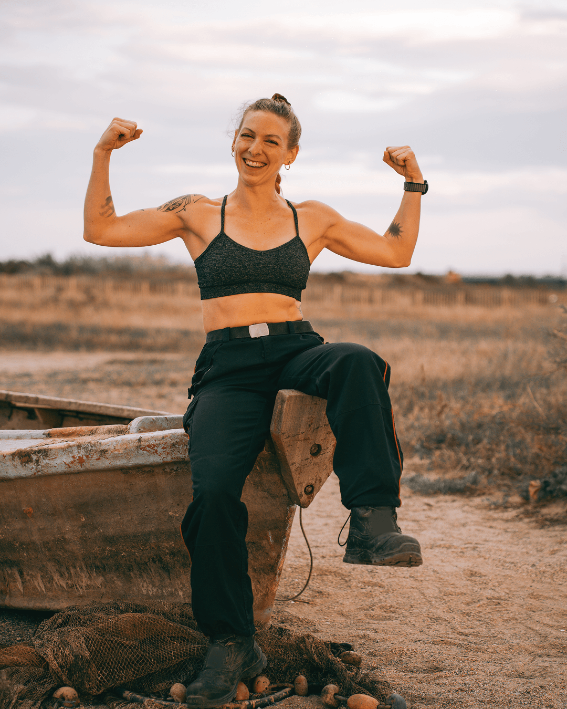
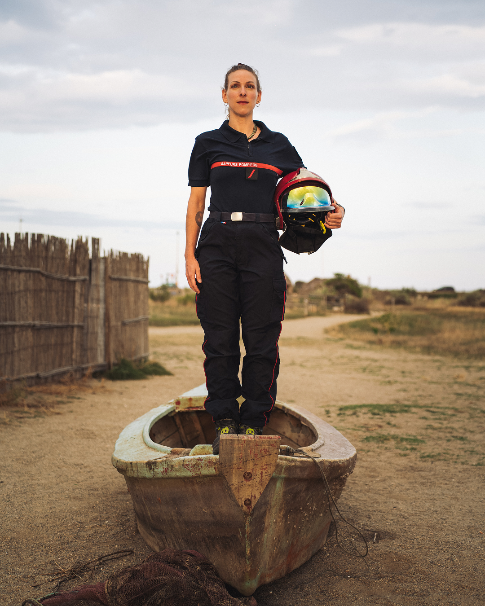
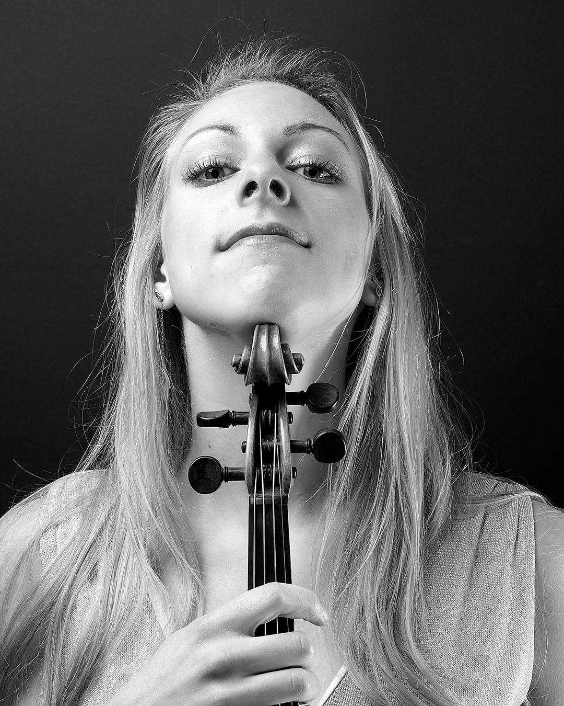
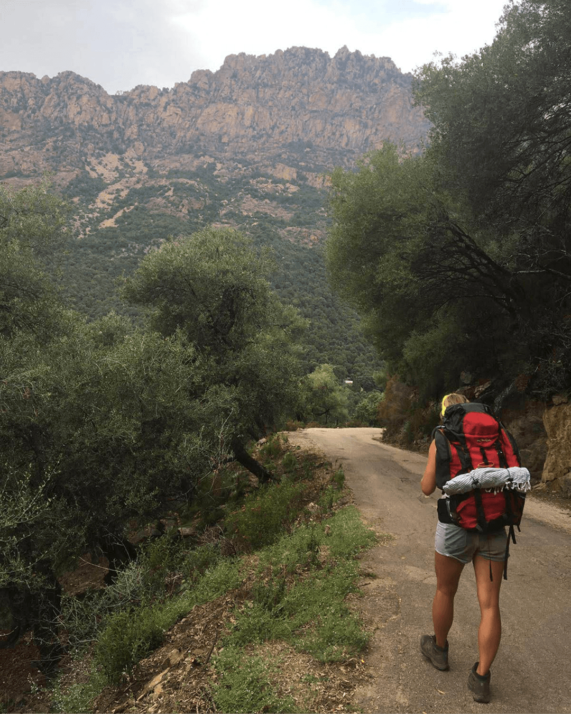
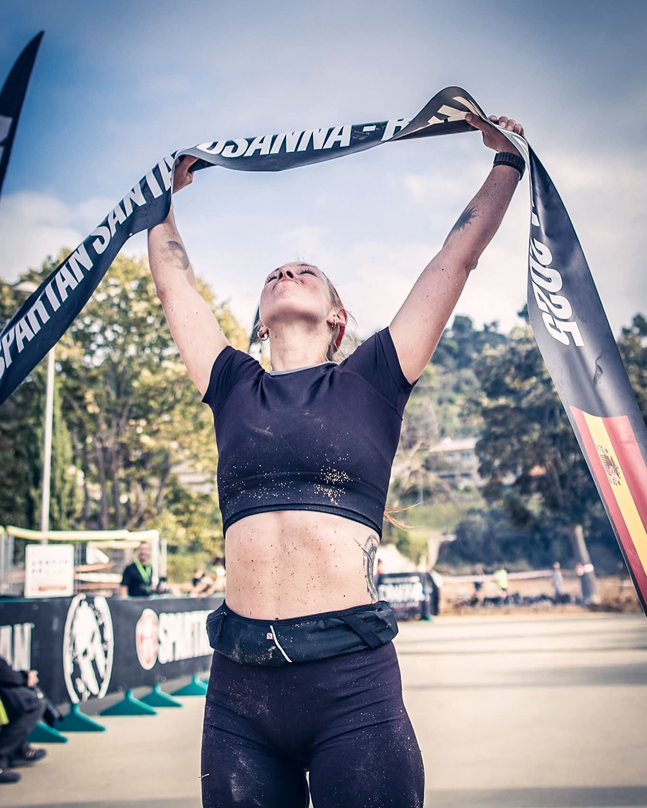
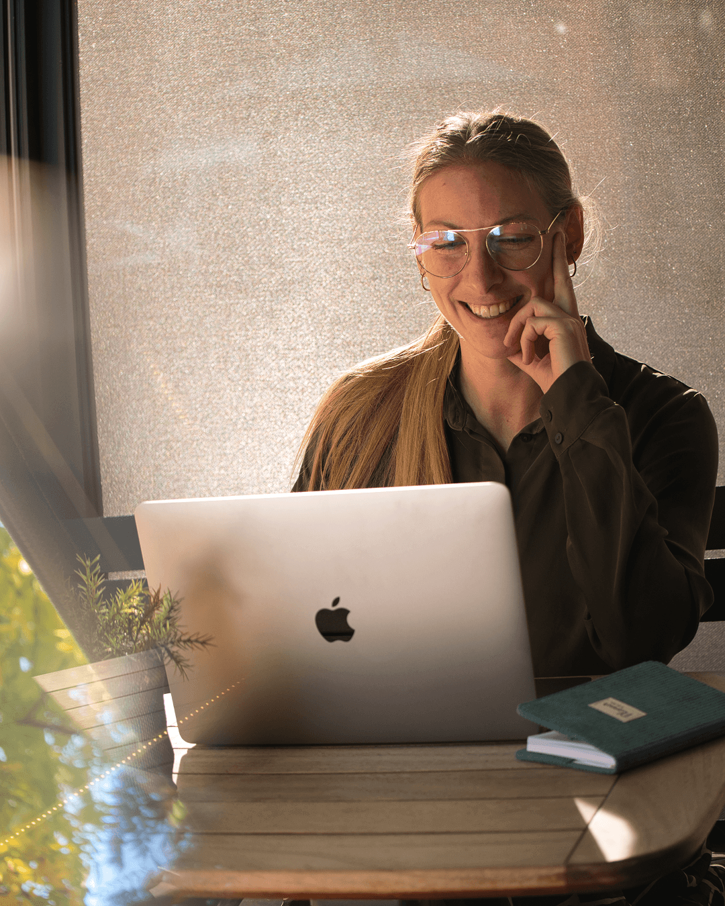

Multipassions
Plutôt qu’un parcours linéaire, j’ai toujours ressenti le besoin d’explorer, de varier, de multiplier les terrains d’expression.
Depuis petite, cette dynamique est déjà présente. Je passe naturellement d’une activité à une autre : construire, créer, écrire, faire du sport, imaginer des projets, inventer des clubs avec mes amis… J’avais envie de diversité, et je structurai déjà mes journées autour de cette alternance.
En grandissant, ce fonctionnement s’est confronté à des cadres plus linéaires. Pendant mes études en musique, je me concentre sur une seule discipline, mais je ressens rapidement un manque. Une forme d’incomplétude, comme si une partie de moi restait inexprimée.
C’est en parallèle que je recommence à explorer : le sport, les voyages en mode autonome, les treks, les stages de survie. J’avais besoin d’intensité, de nouveauté, d’expériences concrètes. L’idée d’un engagement militaire m’a même traversé l’esprit, comme une autre manière de vivre pleinement cette recherche.
Puis vient la vie professionnelle, avec son cadre plus structuré. Cette sensation de décalage se confirme : ne pas pouvoir exprimer toutes les dimensions qui m’animent. Pendant plusieurs années, malgré la frustration ressentie, je compose avec cela… tout en sachant, au fond, que quelque chose ne s’exprimait pas pleinement.
Peut-être que tu ressens aussi cette impression persistante : même quand tout semble “fonctionner”, il manque une forme d’élan, de justesse, comme si tu n’exploitais qu’une partie de ce que tu pourrais réellement être ou faire.
Il y a cinq ans, je fais un choix fort : arrêter un cadre unique pour créer un équilibre différent. Laisser de la place à cette pluralité plutôt que de la contraindre.
Aujourd’hui, je travaille à plein temps, mais à travers plusieurs activités. Je construis un quotidien qui me ressemble, où je peux naviguer entre différents univers, projets et formes d’engagement.
Être multipotentielle, ce n’est pas se disperser. C’est créer un équilibre vivant, où chaque domaine trouve sa place et nourrit les autres.
Une pluralité de terrains d’expression






Aujourd’hui, je ne cherche plus à choisir entre mes centres d'intérêts. Je cherche à les relier autrement.
En réalité, ce n’est pas ainsi que je fonctionne.
Ce qui m’anime profondément, c’est le mouvement : passer d’un univers à l’autre, explorer, relier.
Mon fil rouge, c’est l’aventure : celle de découvrir, tester, vivre plusieurs terrains d’expression, sans m’enfermer dans un seul.
Aujourd’hui, je construis mon quotidien autour de cette dynamique. Non pas en cherchant à tout unifier… mais en laissant chaque espace exister pleinement.
Avancer, pour moi, ne se limite pas à une seule voie. C’est explorer celles qui m’appellent.
Et si cette manière de vivre pouvait aussi se partager ?
Aujourd’hui, j’ai envie d’ouvrir davantage cet espace.
Partager des réflexions, des expériences, des parcours de vie multiples. Mettre des mots, des images et bientôt des vidéos sur ce mouvement permanent.
Ce lieu est en construction et évoluera au rythme des projets, des rencontres et des explorations.
Un espace pour explorer, comprendre et relier.
Et si vous faisiez partie de cette exploration ?
Me contacter